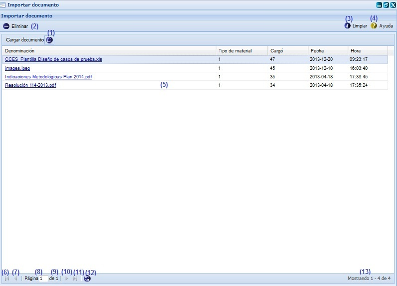
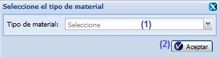

--Importar documento--
Para llegar a esta funcionalidad se puede acceder a través de la opción Inicio/Planificación material/ Importar/Importar documento. Una vez seleccionada la funcionalidad, aparecerá en pantalla la interfaz de la misma, donde el usuario autenticado podrá realizar las acciones que desee, en correspondencia con el acceso que tenga definido, ver figura 1.

Figura 1. Interfaz Importar documento.
Las diferentes opciones que conforman la figura anterior permiten:
- Cargar documento, ver Cargar documento, el sistema mostrará una interfaz permitiendo seleccionar el documento que quiere importar.
- Eliminar documento, se debe seleccionar el documento que se desea eliminar y presionar el botón Eliminar, el sistema mostrará un mensaje de confirmación confirmando que si está seguro que quiere eliminar el documento seleccionado, si presiona el botón Aceptar del mensaje de confirmación el sistema mostrará un mensaje de información notificando que se realizó la operación con éxito.
- Limpiar filtro(s). Esta acción limpiará todos los criterios de búsqueda, deshabilitando los filtros realizados. Se puede realizar esta operación seleccionando la combinación de teclas (Alt + L).
- Mostrar ayuda de la funcionalidad. Se puede realizar esta operación seleccionando la combinación de teclas (Alt + H).
- Se muestra el listado de documentos.
- Ir a la primera página, mostrando las primeros documentos.
- Ir a la página anterior.
- Muestra el número de la página donde se encuentra, se puede introducir el número.
- Muestra el número máximo de páginas.
- Ir a la siguiente página.
- Ir a la última página.
- Actualizar el listado de documentos.
- Mostrar la cantidad de resultados encontrados.
Cargar documento
Para cargar un documento se debe presionar el botón Cargar documento, opción (1) de la figura 1. Inmediatamente se mostrará la interfaz Carga de archivos donde se selecciona el archivo que se desea importar. Se selecciona la opción Abrir de la interfaz Carga de archivos y se muestra la ventana Seleccione el tipo de material, ver figura 2. Si se opta por la opción Cancelar se cierra la ventana Carga de archivos y se regresa a la interfaz Importar documento.

Figura 2. Interfaz Seleccione el tipo de material.
Las diferentes opciones que conforman la figura anterior permiten:
- Seleccionar un tipo de material.
- Cerrar la ventana permitiendo adicionar el documento.